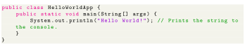

Next: Example with methods Up: Syntax Previous: Syntax Contents
The traditional Hello world program can be written in Java as:

All source files must be named after the public class they contain, appending the suffix , for example, . It must first be compiled into bytecode, using a Java compiler, producing a file with the suffix ( , in this case). Only then can it be executed or launched. The Java source file may only contain one public class, but it can contain multiple classes with a non-public access modifier and any number of public inner classes. When the source file contains multiple classes, it is necessary to make one class (introduced by the class keyword) (preceded by the public keyword) and name the source file with that public class name.
A class that is not declared public may be stored in any file. The compiler will generate a class file for each class defined in the source file. The name of the class file is the name of the class, with appended. For class file generation, anonymous classes are treated as if their name were the concatenation of the name of their enclosing class, a $, and an integer.
The keyword denotes that a method can be called from code in other classes, or that a class may be used by classes outside the class hierarchy. The class hierarchy is related to the name of the directory in which the file is located. This is called an access level modifier. Other access level modifiers include the keywords (a method that can only be accessed in the same class) and (which allows code from the same package to access). If a piece of code attempts to access private methods or protected methods, the JVM will throw a .
The keyword in front of a method indicates a static method, which is associated only with the class and not with any specific instance of that class. Only static methods can be invoked without a reference to an object. Static methods cannot access any class members that are not also static. Methods that are not designated static are instance methods and require a specific instance of a class to operate.
The keyword
indicates that the main method does not return any value to the caller. If a Java program is to exit with an error code, it must call
 explicitly.
explicitly.
The method name main is not a keyword in the Java language. It is simply the name of the method the Java launcher calls to pass control to the program. Java classes that run in managed environments such as applets and Enterprise JavaBeans do not use or need a main() method. A Java program may contain multiple classes that have main methods, which means that the VM needs to be explicitly told which class to launch from.
The main method must accept an array of
 objects. By convention, it is referenced as
although any other legal identifier name can be used. Since Java 5, the main method can also use variable arguments, in the form of
, allowing the main method to be invoked with an arbitrary number of
arguments. The effect of this alternate declaration is semantically identical (to the args parameter which is still an array of
objects), but it allows an alternative syntax for creating and passing the array.
objects. By convention, it is referenced as
although any other legal identifier name can be used. Since Java 5, the main method can also use variable arguments, in the form of
, allowing the main method to be invoked with an arbitrary number of
arguments. The effect of this alternate declaration is semantically identical (to the args parameter which is still an array of
objects), but it allows an alternative syntax for creating and passing the array.
The Java launcher launches Java by loading a given class (specified on the command line or as an attribute in a JAR) and starting its
method. Stand-alone programs must declare this method explicitly. The
parameter is an array of
objects containing any arguments passed to the class. The parameters to
are often passed by means of a command line.
Printing is part of a Java standard library: The class defines a public static field called . The out object is an instance of the class and provides many methods for printing data to standard out, including which also appends a new line to the passed string. The string Hello World! is automatically converted to a String object by the compiler.